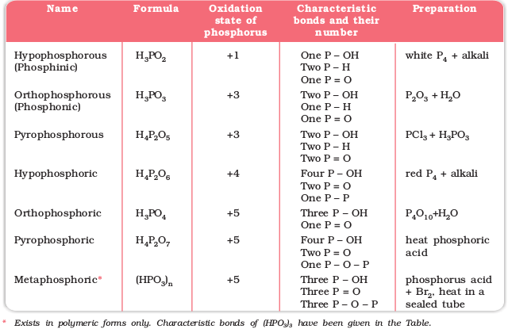
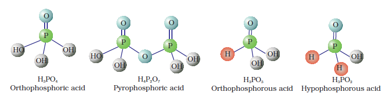
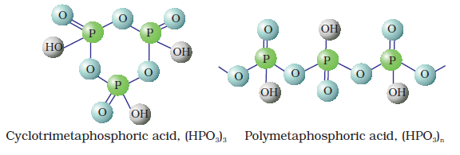
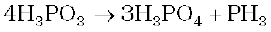

7.9 Oxoacids of Phosphorus
Phosphorus forms a number of oxoacids. The important oxoacids of phosphorus with their formulas, methods of preparation and the presence of some characteristic bonds in their structures are given in Table 7.5.
Table 7.5: Oxoacids of Phosphorus

The compositions of the oxoacids are interrelated in terms of loss or gain of H2O molecule or O-atom.
The structures of some important oxoacids are given below:


Fig. 7.4 Structures of some important oxoacids of phosphorus
In oxoacids phosphorus is tetrahedrally surrounded by other atoms. All these acids contain at least one P=O bond and one P–OH bond. The oxoacids in which phosphorus has lower oxidation state (less than +5) contain, in addition to P=O and P–OH bonds, either P–P (e.g., in H4P2O6) or P–H (e.g., in H3PO2) bonds but not both. These acids in +3 oxidation state of phosphorus tend to disproportionate to higher and lower oxidation states. For example, orthophophorous acid (or phosphorous acid) on heating disproportionates to give orthophosphoric acid (or phosphoric acid) and phosphine.

The acids which contain P–H bond have strong reducing properties. Thus, hypophosphorous acid is a good reducing agent as it contains two P–H bonds and reduces, for example, AgNO3 to metallic silver.
4 AgNO3 + 2H2O + H3PO2 → 4Ag + 4HNO3 + H3PO4
These P–H bonds are not ionisable to give H+ and do not play any role in basicity. Only those H atoms which are attached with oxygen in P–OH form are ionisable and cause the basicity. Thus, H3PO3 and H3PO4 are dibasic and tribasic, respectively as the structure of H3PO3 has two P–OH bonds and H3PO4 three.
Example 7.9
How do you account for the reducing behaviour of H3PO2 on the basis of its structure ?
Solution
In H3PO2, two H atoms are bonded directly to P atom which imparts reducing character to the acid.